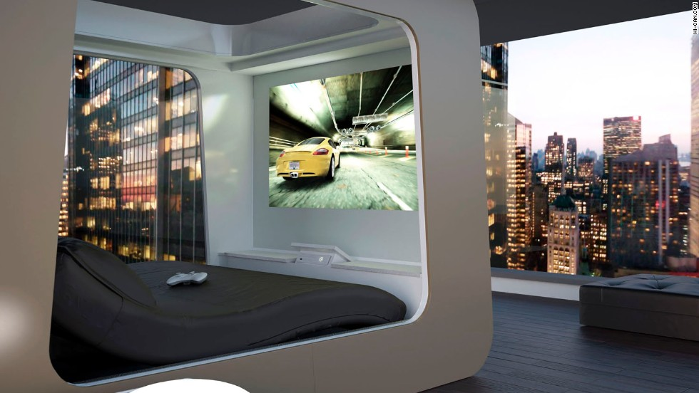
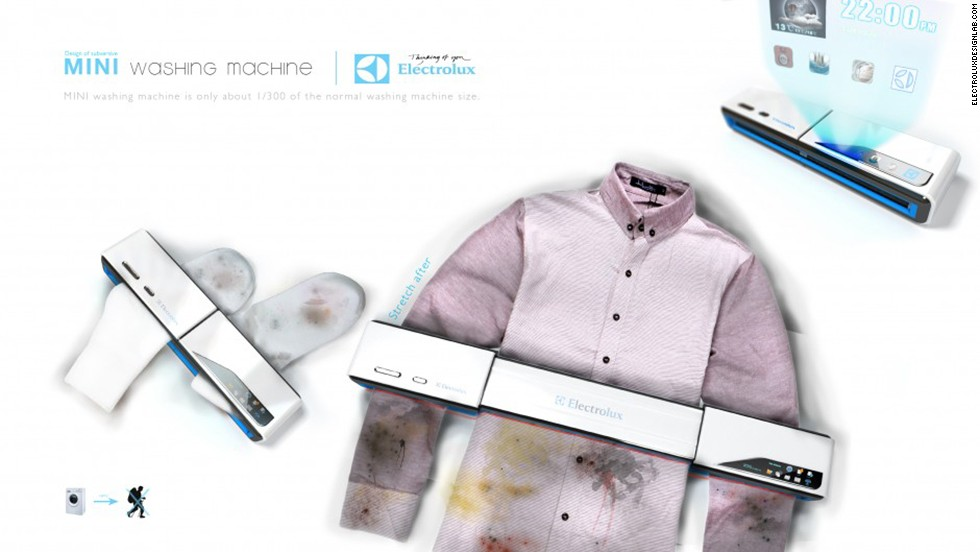
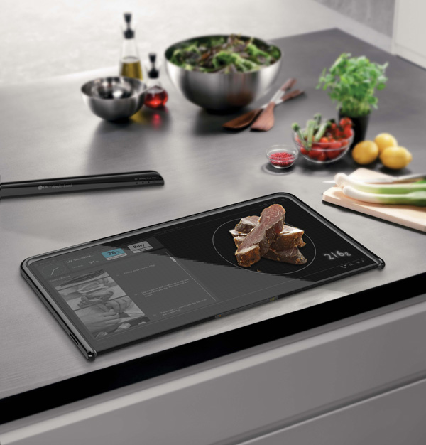
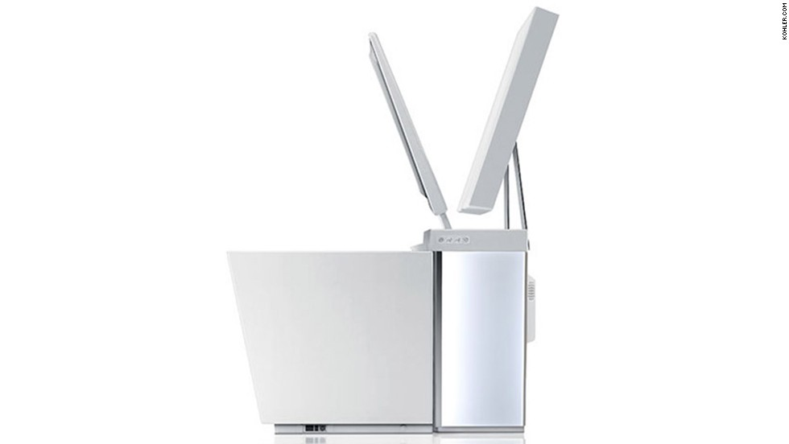
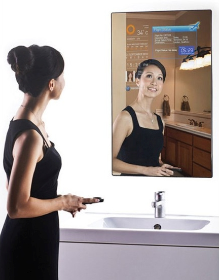
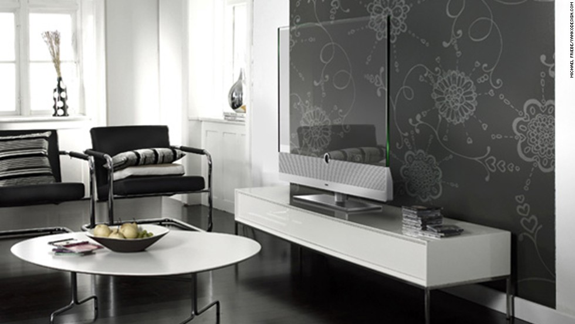
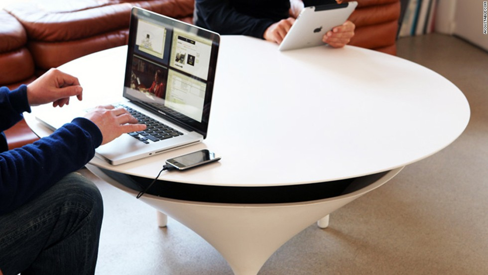
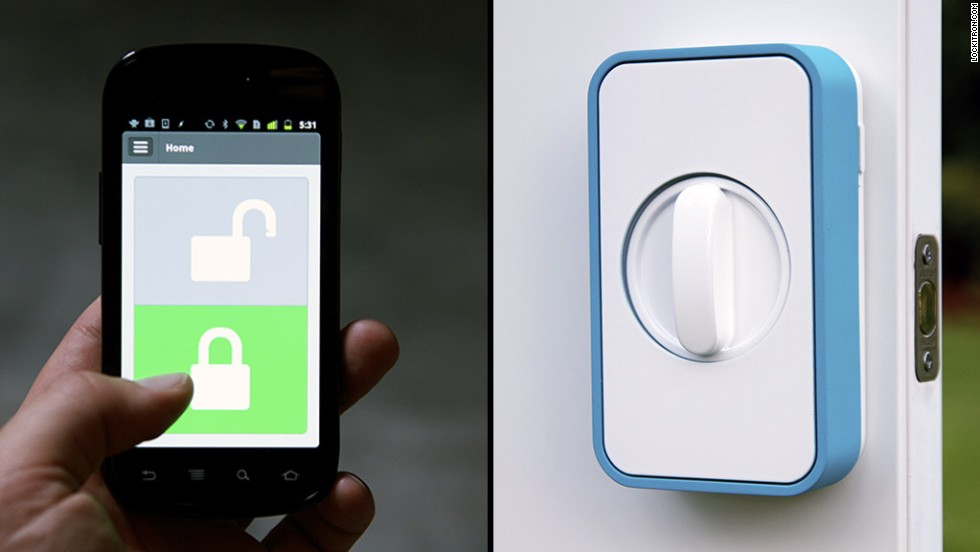

Text B
Take a Peek Inside Your Future Home
Brit Morin
1 I remember watching TV shows such as The Jetsons when I was a child and fantasizing about the possibilities of living with a robot, riding in a flying car, or having food instantly show up warm and ready whenever I wanted it.
2 Fast forward a couple decades later, and it turns out that we are now on the brink of a Jetsons-like reality. Robotics companies are popping up all around the world, enabling humans to program objects with artificial intelligence to do mundane tasks for them, ranging from mopping the floors to answering doors.
3 The technological revolution has impacted so many parts of our lives, and the "smart home" is the next big trend on the horizon. Computer scientists and industrial designers are working together to prototype new technologies that will make life at home easier and more efficient. Read on to unveil home technologies that are either available now or may become available over the next 5-10 years.
Bedroom
4 The futuristic Hi-Can bed comes complete with blinds that drop on all sides, making it pitch-black even in full daylight, a built-in PC, and a multimedia system with connected speakers surrounding the bed and a large high-definition projector screen that drops down at the foot of the bed. It is also able to connect via Wi-Fi to all other compatible devices in your home, making it easy to adjust the lights and sounds throughout your house—right from your bed.
5 Though still in a conceptual development phase, this mini washing machine may change the way we all do laundry. Perfect for those without a lot of space for a full-size washer, this machine is compact and portable, enabling you to wash pieces of laundry on-the-go. It's also designed to be eco-friendly. Instead of using water and soap, the machine cleans clothes via ultrasonic waves and can be charged with the sun via a built-in solar panel. These innovations could prove quite useful for those in developing countries without much access to water.
Kitchen
6 Another product still in its conceptual design phase, the digital cutting board is designed to be a touchscreen device, a food scale, and a cutting board in one. It can display recipes and step-by-step instructions while also telling you if you've added too much of an ingredient based on the weight of your food.

7 Up until recently, molecular gastronomy was used to describe the science of cooking; however, it is now more commonly referred to as a new type of cuisine that chefs all over the world have been adopting which uses common chemistry techniques to create a physical and chemical reaction during cooking. The result can yield all kinds of frozen foods in addition to tasty liquids like foams and jellies. The Mo'Sphere is a molecular cooking device that lets you, the home cook, create the same types of foods from within the walls of your own kitchen. No white coat required.
Bathroom
8 The Numi Toilet may just be one of the most advanced toilets ever. Complete with a touchscreen interface and built-in speakers, the toilet can connect via bluetooth to devices like your smartphone in order to play your favorite music or podcasts while you're on the pot. It also comes equipped with a motion sensor that raises the lid as you enter the bathroom, bidet functionality, a heated seat, and ambient lighting with multiple color options. There are even heat vents for your feet!
9 Already a hit in Asia and Europe, the Magic Mirror is a new product that is fast making its way to America. It's a fully functioning mirror that has a built-in display connected to the Internet so that you can browse the web, watch videos, check the weather, and more—like Google glass for your bathroom—all while you're getting ready for your day. It also comes with a sensor pad so that you can keep up with your health vitals (weight, etc.) from a single location.
Living Room
10 Ever wish you could not only turn your TV off, but make it invisible as well? The transparent TV may just be the answer to your wishes. It's a new product design that does just what it sounds like—makes your TV screen transparent so that when it's turned off, you can see straight through it. While this one is more about form than its function, I could be swayed by it for aesthetic purposes alone.
11 Acoustable is a speaker and a table in one, and aims to be as useful to place things on as it is to pump out sound. It is Wi-Fi compatible and thus can connect to your computer, iPod, or phone to play music or videos. It's a space saver and conversation piece all at once.
Garage/door
12 New tools make locking and unlocking your doors as easy as pushing a button on your smartphone. Devices like Lockitron, Kevo, and August are useful not only for those who have a tendency to misplace their keys, but also for those who may want to grant access to someone to enter their home remotely. Using a connected app, you can give a friend permission to unlock your door for a specified period of time, a good solution for those who may have guests stopping by when they're not around.
13 Would you use any of these futuristic home technologies? If you can't get enough, cheek out even more gadgets from your future home. You might be using some of them inside your own house sooner than you think.